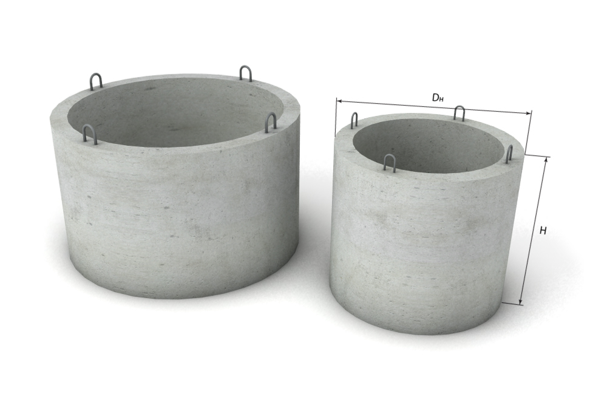

Строительные материалы в Харькове
Бетонные кольца для колодцев
Железобетонные кольца широко применяют при строительстве колодцев для канализационных сетей, выгребных ям, водопроводных и газопроводных сетей, при ремонте теплосетей. Их выполняют методом вибропрессования бетонной смеси. Наши бетонные кольца имеют точные размеры, отличаются высокой плотностью и однородностью стенок. Также для них характерна пониженная водонепроницаемость. Мы реализуем в Харькове колодезные кольца по низким ценам. Это универсальный и незаменимый строительный материал. Доставка, разгрузка и монтаж ЖБ колец Выполняем работы по строительству канализаций любой сложности: герметичные, с переливом, дренажами;
Цены на ЖБ кольца и крышки для колодцев и канализации
| Название | Размеры, м | Цена, грн | ||||
|---|---|---|---|---|---|---|
| Наружный | Внутренний | Высота | Кольца | Крышки | ||
| КС - 0,7.9 | 0,86 | 0,7 | 0,9 | 500 | - | |
| КС - 0,8.8 | 0,96 | 0,8 | 0,8 | 500 | 400 | |
| КС - 10.9 | 1,2 | 1 | 0,9 | 650 | 500 | |
| КС - 15.9 | 1,7 | 1,5 | 0,9 | 1300 | 1100 | |
| КС - 20.9 | 2,2 | 2 | 0,9 | 1600 | 1300 | |
| Люк бетонный 0,8 | 0,8 | - | - | 250 | 250 | |
Материалы, который мы используем в производстве железобетонных колец, изготовлены в соответствии с официальными технологическими стандартами и отвечают техническим задачам. Применяемый бетон переносит без проблем кислую и щелочную среду, устойчив к воздействию активной органики, выдерживает большое сжатие и низкие температуры. Металлическая арматура в жб кольцах, крышках и люках препятствует разрушению конструкции и гарантирует ее высокую прочность. Арматура защищена бетоном от коррозии, поэтому долговечна. Конструкция из бетонных колец проста в сборке и прочна. Она устойчива к неблагоприятным средам и долговечна. Срок службы может достигать более 25 лет. По соотношению получаемого качества конструкции и её стоимости, железобетонные кольца пока не имеют альтернативы.